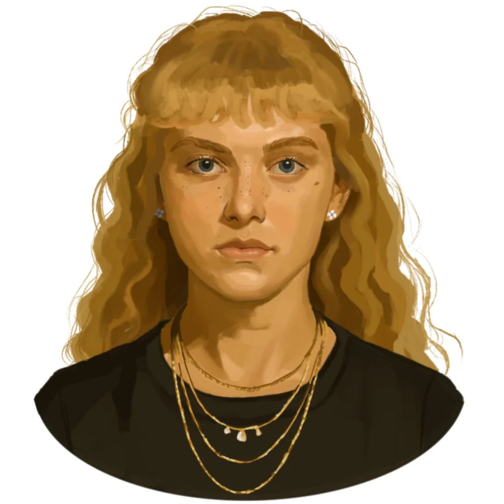

A Viadal előtt
A Játékok előtt Maysilee Donner a szüleivel és ikertestvérével, Merrilee-vel egy édességbolt felett lakott a
12.
körzet kereskedői negyedében és Asterid Everdeen legjobb barátnője volt. Gyakran ugratta a többi gyereket,
Louella McCoy húgának azt mondogatta, hogy úgy néz ki, mintha szénport használna púdernek, és tetves, tetves
Haymitch”-nek nevezte Haymitch Abernathyt, amikor nyafogott.
Portré

© u/IllegalSympathy, Reddit
Az Aratás
Maysilee egyike volt a 12. körzet négy kiválasztottjának az 50. Éhezők viadalán, Haymitch Abernathy, Wyatt
Callow
és Louella McCoy mellett. A szokásos versenyzői létszám minden körzetből kettő volt (egy fiú és egy lány),
de
mivel az 50. Éhezők viadala egyben a második Nagy Mészáros is volt, a Kapitólium kétszer annyi
kiválasztottat
követelt az eseményre. Ezt azért választották, hogy emlékeztessék a körzeteket, hogy minden egyes Kapitólium
polgárért, akit megöltek a Sötét Napok alatt, két lázadót is megöltek. Asterid és Merrilee is Maysilee-be
kapaszkodva látszott az aratáson. Az aratása
meglepetés volt, mivel a tehetős városi gyerekeket ritkán választják ki.
Út a Kapitóliumba
A Kapitólium felé tartó vonatút során Maysilee megvédte Louellát Drusilla Sickle sértésétől. Ketten
összevitatkoztak, aminek következtében Maysilee megütötte a nőt, aki aztán a cipősarkával összeverte.
Maysilee
több
zúzódást szerzett, de tovább sértegette Drusillát.
A felvonulás
Az Akadémia tornatermében gúnyolódott az első körzetiek ruháján, mivel az öltözőben nem jöttek ki egymással.
Amikor kivezették őket a felvonuláshoz, az egyik tömegtag megpróbálta a botjával arcon szúrni. A
lovak, amelyek a szekeret húzták, megriadtak és gyors vágtába kezdtek. (spoiler!)
Maysilee-nek és Wyatt-nek sikerül megkapaszkodniuk a korlátban, Louella viszont meghalt,
miután a koponyája a földnek csapódott. Wyatt-tel csatlakoztak a másik
kettőhöz, ahol levett egy gyöngyös nyakláncot, és a kislány nyakába helyezte, mivel eredetileg
amulettnek
akarta adni neki. Ahogy a Békeőrök elkezdtek feléjük közeledni, Maysilee arra biztatta Haymitchet,
hogy
fusson el, és kényszerítse őket harcolni a lány testéért, mivel az nem az övék. Később Maysilee
megdicsérte
Haymitchet, amiért megmutatta a tömegnek, hogy ne szórakozzanak a 12. körzettel.